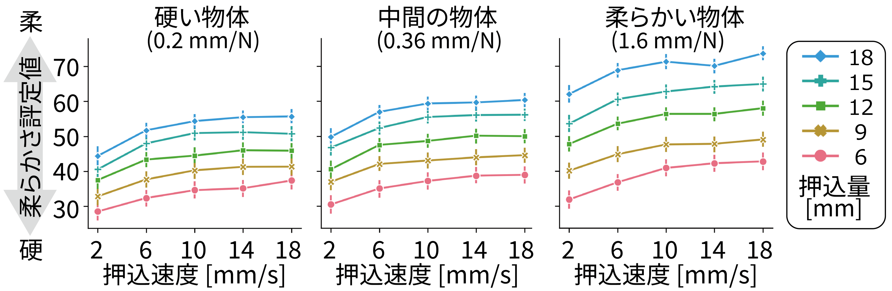
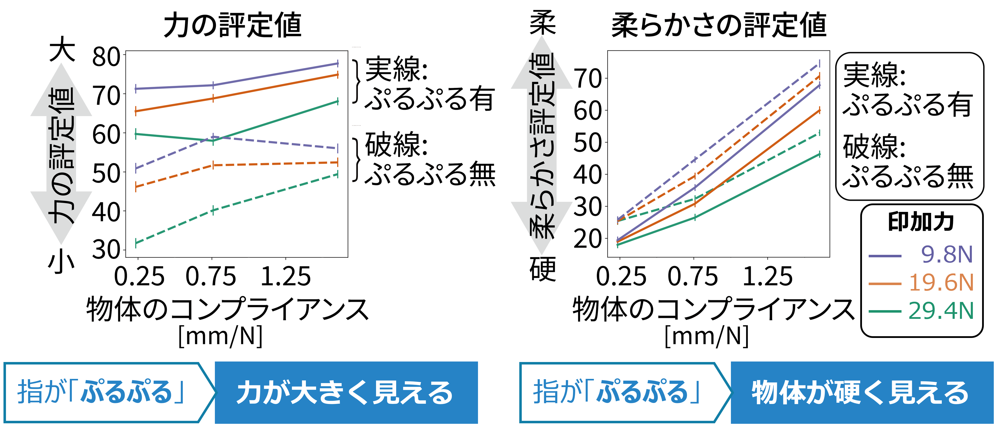

* This is the result of joint research with Dr. Kawabe (NTT). The descriptions here may include my personal opinions.
For shoppers buying a pillow or cushion, the softness of the product is important information for making purchase decisions. However, in situations where the product cannot be touched—such as online shopping—softness must be conveyed in another way. One typical method is to use video. People can judge the softness of a deforming object by looking at it. For example, when comparing the two videos A and B below, most people will perceive the object in video A as softer. But why does the object in A feel softer? Until now, it had not been clear what visual information people use to judge softness. In our research, we focused on motion information generated when an object deforms, and clarified its relationship with softness perception.
Figure 1: Which object looks softer, A or B?
In our first study, we focused on the motion of an indented object. In this experiment, participants rated the softness of the object in the video on a 100-point scale. As visual stimulus conditions, we manipulated the indentation magnitude, indentation speed, and object compliance (a physical measure of softness, the inverse of the spring constant; the larger the compliance, the softer the object). The video in Figure 2 below shows excerpts of what the participants saw. Which objects look softer?
Figure 2: Videos of objects being indented, as seen by experimental participants. Indentation magnitude, indentation speed, and compliance were manipulated.
Figure 3 below shows the participants' softness ratings. We revealed that softness judgment varied with indentation magnitude and speed. The larger the indentation magnitude or speed, the softer participants tended to perceive the object.

Figure 3: Softness rating results for each video.
Another finding was that indentation magnitude and speed alone could not explain the variation in softness judgment. The three graphs in Figure 3 each show results for objects with different compliance values. If softness judgment were determined solely by indentation magnitude and speed, the three graphs should be identical. However, the patterns of softness variation differ across the three graphs. For example, softer objects show a larger range of softness rating variation. This means that softness judgment also varied with object compliance. Since compliance information is not displayed in the video as something like "0.2 mm/N", participants cannot directly obtain that information. Then why did the ratings vary with compliance? In fact, even when the indentation magnitude and speed at the indented point are the same, the way an object deforms at locations away from the indented point differs between soft and hard objects. Figure 4A shows videos of hard and soft objects with the same indentation magnitude and speed, and you can see that the deformation away from the indented point differs. Taking this into account, we constructed measures of overall deformation magnitude and overall deformation speed using image statistics. When we analyzed the softness ratings using these measures, we found that the variation in softness ratings could be explained very well. In other words, people judge softness based on overall deformation magnitude and speed, rather than on the magnitude and speed of motion at the indented point.
Figure 4A: Deformation away from the indented point varies with object softness. Figure 4B: Overall deformation magnitude and speed explain human softness judgment well.
One might argue that the effect could be due to surface texture. We therefore conducted a similar experiment with videos in which the surface texture was filled in (removed), and the results showed the same trend. Furthermore, when we analyzed the effect of texture removal, no significant effect was found. So the influence of surface texture appears to be small. For details, please see paper [1].
Next, we introduce our second study, which focused on the jittery motion of the pressing finger. Softness judgment should be related to the judgment of the magnitude of the pressing "force." Although force itself is invisible, it is possible that people judge force magnitude based on visual information. For example, when you see "jittery" motion during a push-up, that's evidence the person is exerting force.
Figure 5: Jittery motion.
Our hypothesis was that when the finger pressing an object jitters, observers would perceive a larger force being applied, which in turn would affect their softness judgment of the pressed object. In the experimental task, observers rated the magnitude of the force and softness on a 100-point scale. As experimental conditions, we manipulated the presence/absence of jittery finger acting, the indentation force, and object compliance. Figure 5 shows videos with and without "jittery acting." In both videos, the object compliance and indentation force are actually the same.
Figure 6: Difference between videos with and without "jittery acting."
As a result, when the other person's finger appeared "jittery," observers judged the force as greater and the object as harder. We can interpret this as: for the same deformation magnitude, if the finger is jittering and applying a large force, the object being pressed should be hard. For details, please see paper [2].

Figure 7: When the finger jitters, observers judge the force as larger and the object as harder.
We found that softness judgment is influenced by motion statistics corresponding to deformation magnitude and speed, and by force estimation based on jittery finger motion. As future applications of this research, we envision (1) display technologies that can realistically convey the texture of products online, and (2) display technologies that accurately convey the physical state of others in virtual spaces.